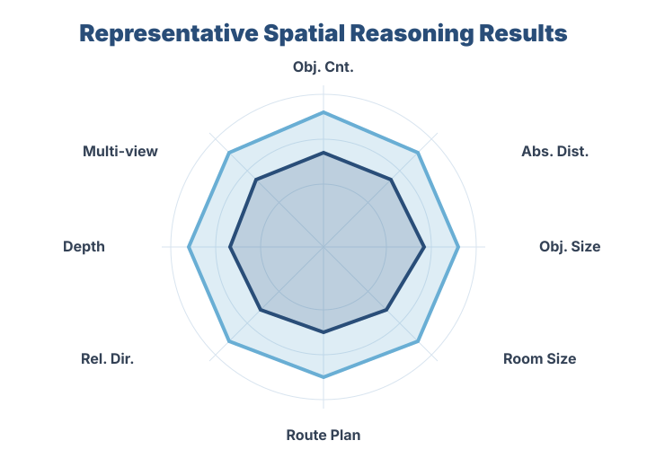
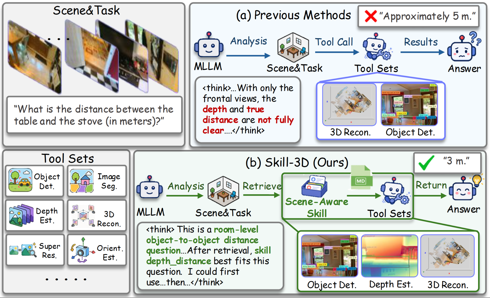
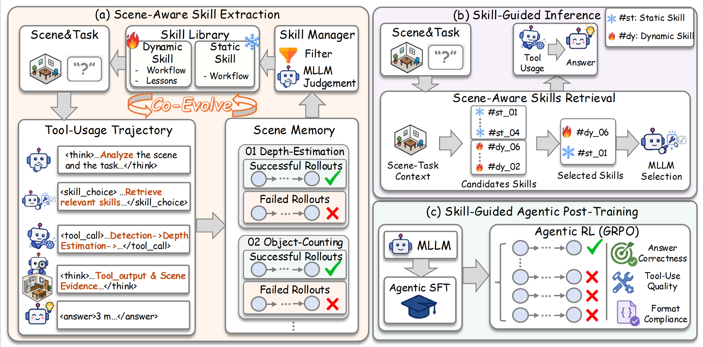
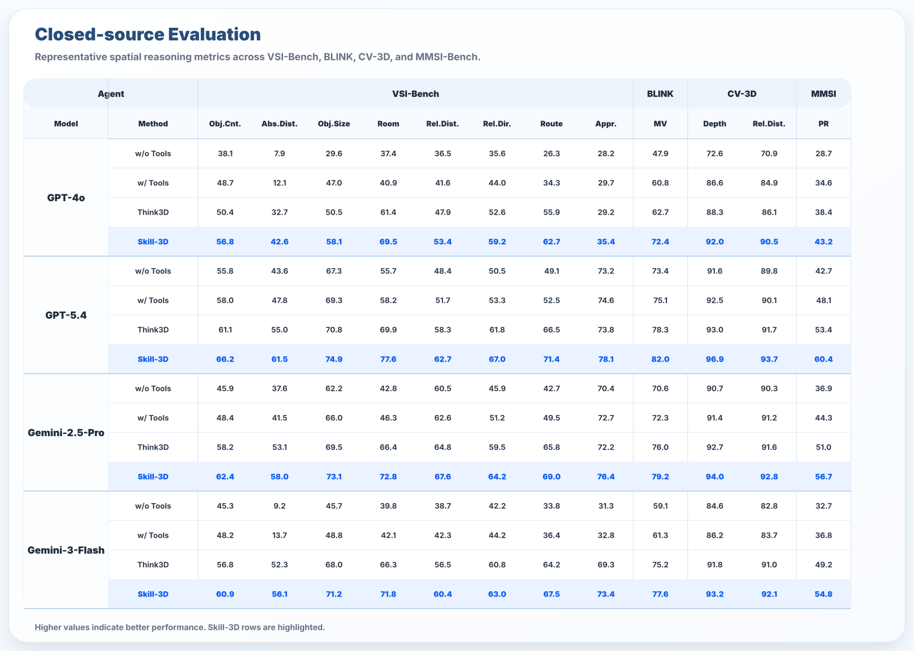
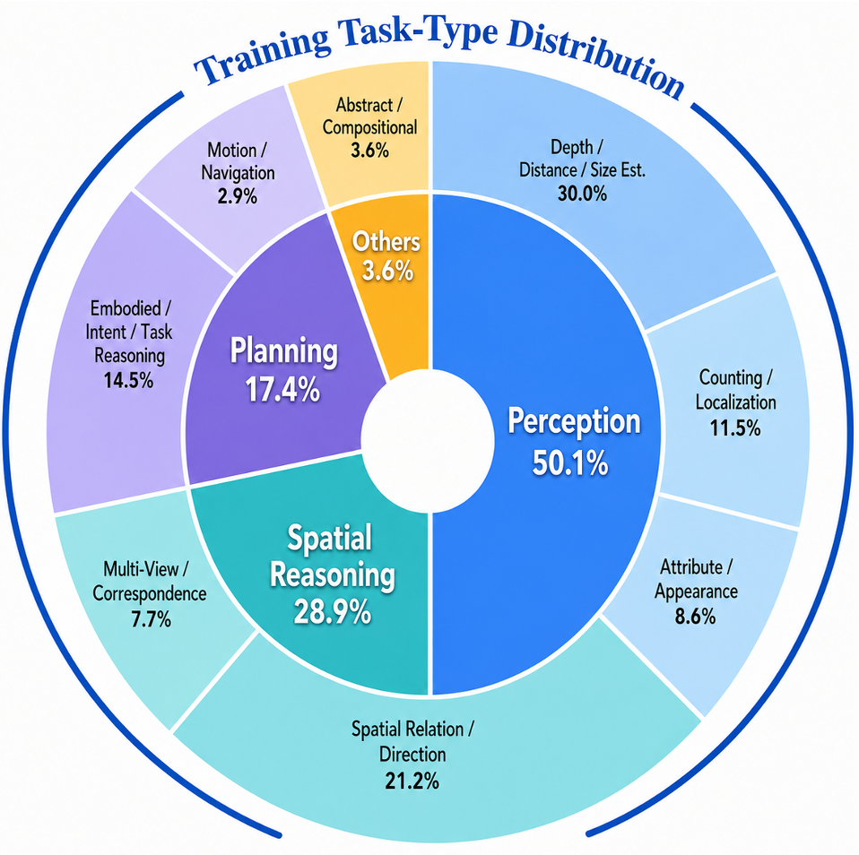
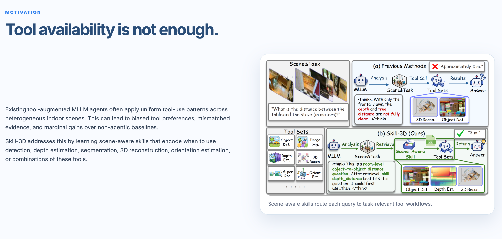
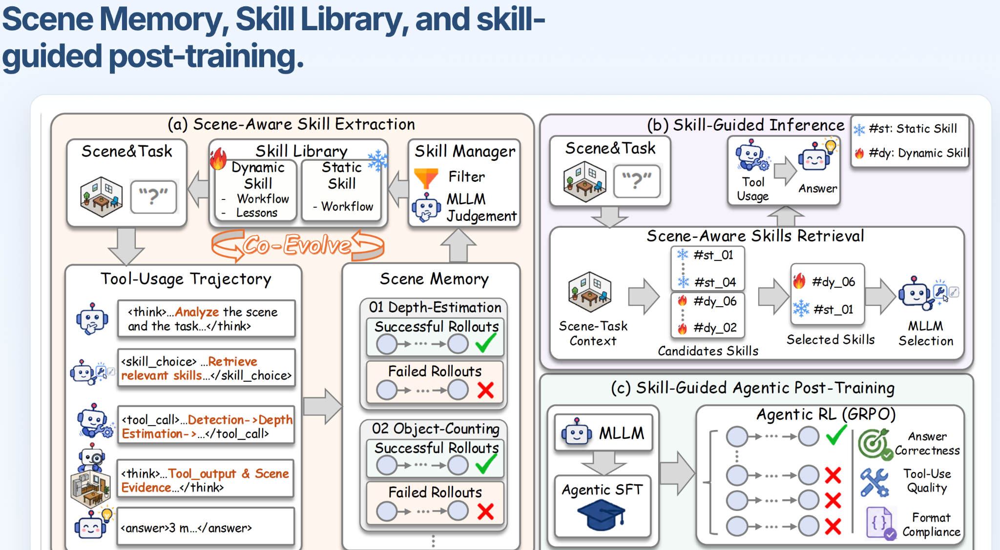
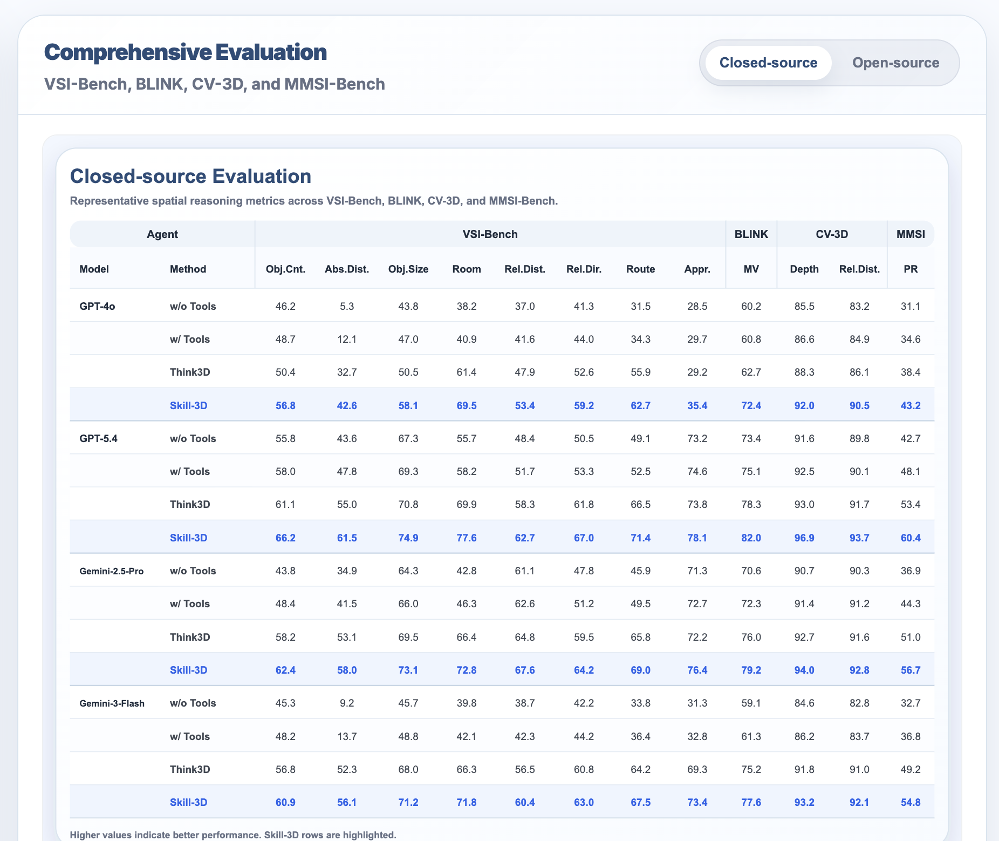
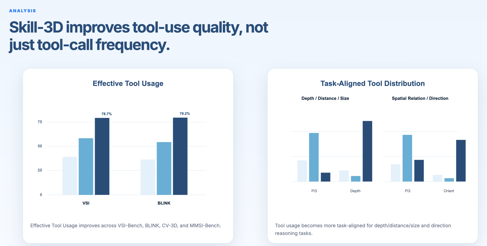
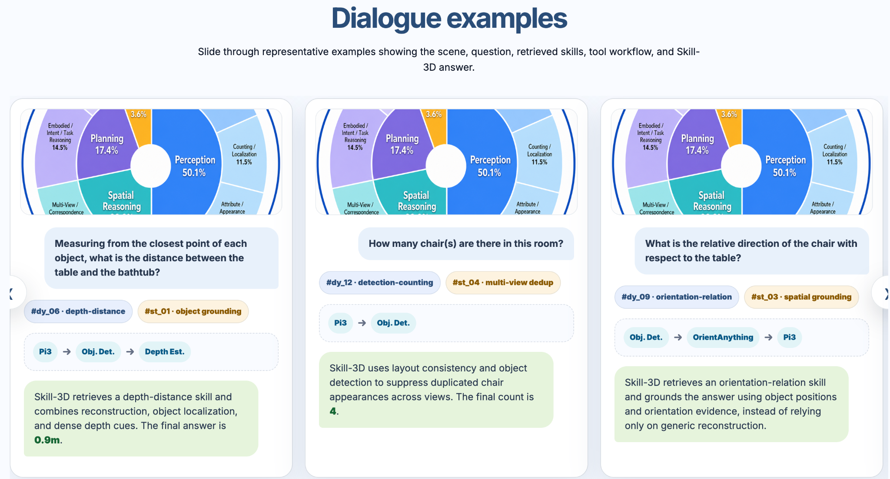

Uniform Tool Use
Existing agents often apply fixed tool workflows across different spatial tasks, causing mismatched evidence and limited gains.
Agentic 3D Spatial Reasoning
Query type · target objects · required evidence
Rollouts · tool outputs · success / failure traces
Workflows + failure lessons
Agentic SFT + GRPO
Motivation


Existing agents often apply fixed tool workflows across different spatial tasks, causing mismatched evidence and limited gains.
Skill-3D retrieves task-specific skills to select the right tools and ground answers in relevant 3D evidence.
Method

Successful rollouts are distilled into reusable workflows. Failed rollouts are attached as lessons and converted into fallback rules when they provide reliable corrections.
Given a query, Skill-3D retrieves candidate static and dynamic skills, selects a compact subset, and uses them to guide evidence acquisition and final reasoning.
Skill-guided trajectories supervise compact MLLM agents through agentic SFT and GRPO, teaching them to select skills, call tools, and ground answers in evidence.
Results
VSI-Bench, BLINK, CV-3D, and MMSI-Bench

Closed-source evaluation across GPT-4o, GPT-5.4, Gemini-2.5-Pro, and Gemini-3-Flash.
Skill-3D consistently outperforms non-agentic, direct tool-use, and Think3D baselines across four closed-source MLLM agents. The gains are most pronounced on VSI-Bench, where different spatial categories require task-specific evidence such as object grounding, depth estimation, and multi-view verification.
Skill-guided post-training transfers to compact Qwen3-VL-4B/8B agents. The results show that scene-aware tool-use behavior can be internalized by smaller policies through agentic SFT and GRPO, improving skill selection, tool usage, and evidence-grounded answering.
Analysis
Hover over each bar to inspect the exact value.
Bars show tool-call frequency by task group; hover for exact values.
Qualitative Cases
Slide through six representative examples showing the scene, question, retrieved skills, tool workflow, and Skill-3D answer.






Citation
@inproceedings{skill3d2026,
title = {Skill-3D: Evolving Scene-Aware Skills for Agentic 3D Spatial Reasoning},
author = {Haoyuan Li and Zhengdong Hu and Jun Wang and Hehe Fan and Yi Yang},
booktitle = {EMNLP},
year = {2026}
}